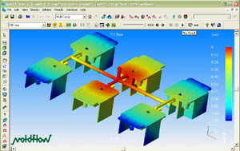

|
 Plastik
parçalarýn ve bu parçalarýn kalýplarýnýn tasarýmý sýrasýnda
gözden kaçýrýlan hatalar, üretim aþamasýna geçildiðinde, günümüz
rekabet koþullarýnda üretici firmalarýn büyük para ve zaman
kaybetmesine neden olabilir. Enjeksiyon kalýp tasarýmýndan
üretime geçilirken ortaya çýkan problemlere, MoldFlow ürünleri,
etkili ve foksiyonel çözümler sunar. Plastik
parçalarýn ve bu parçalarýn kalýplarýnýn tasarýmý sýrasýnda
gözden kaçýrýlan hatalar, üretim aþamasýna geçildiðinde, günümüz
rekabet koþullarýnda üretici firmalarýn büyük para ve zaman
kaybetmesine neden olabilir. Enjeksiyon kalýp tasarýmýndan
üretime geçilirken ortaya çýkan problemlere, MoldFlow ürünleri,
etkili ve foksiyonel çözümler sunar.
Moldflow
Plastics AdvisersT (MPA)
Parça
ve kalýp tasarýmcýlarýnýn ihtiyaçlarý düþünülerek oluþturulan
Moldflow Plastics AdvisersT, potansiyel üretim problemlerini
elemek için, parçalarýn ve kalýp tasarýmlarýnýn ilk aþamasýnda
parça kalitesindeki problem olabilecek kritik üretim noktalarýný
tanýr ve çözümler sunar. Bu þekilde, plastik parçalarýn üretim
aþamasýna geçilmeden önce, üretim aþamasýnda doðabilecek problemler
minimum seviyeye indirilmiþ olur.
Bilinen
plastik üretim sorularýnýzý cevaplandýrýn:
- Tamamen
dolacak mý?
-
Birleþme çizgileri ve hava boþluklarý nerelerde oluþur?
- Hangi
malzeme kullanýlmalý ve giriþ noktasý nerede olmalý?
- Yolluk
sistemi dengeli mi?
- Düzenli
soðuma ve minimum döngü zamaný için soðuma devreleri nasýl
tasarlanmalý?
- Üretilebilirliði
optimum yapabilmek için geometri nasýl deðiþtirilmeli?
- Çökmeler
nerelerde, ne kadar olacak?
- Yüzey
kalitesi benim için yeterli mi, sorunlu bölgeler nerelerde?
- Hacimsel
çekme ne kadar olacak, optimum ütüleme þartlarý neler?
- Kabul
edilebilir þartlarda mý çarpýlma olacak?
- Çarpýlmayý
azaltabilmek için gerekli iþlem þartlarý, malzeme ve parça
tasarýmý nasýl deðiþtirilmeli?
- Parçanýn
ortalama üretim maliyeti ne olacak?
Moldflow
Part Adviser (Parça tasarýmcýlarý için):
-
Enjeksiyon ile imal edilecek plastik parçalarýnýzýn imal
edilebilirliðini deðerlendirin
- Belirlediðiniz
þartlarda tam dolup dolamayacaðýný görün
- Dünya
genelindeki polimer üreticilerinden elde edilen, 7800'den
fazla polimer içeren malzeme kütüphanesinden yararlanýn
- En
uygun giriþ noktasýný otomatik bulun
- Yüzey
hatalarýný gözlemleyin, nedenlerini görün ve giderin
- Birleþme
çizgileri ve hava boþluklarýnýn oluþabileceði yerleri görün
- Çökmeleri
görün ve düzeltmek için tavsiyeler alýn
- Yüzey
kalitesinin size uygunluðunu görün ve sorunlu bölgeleri
nedenleriyle beraber tespit edin
- Geometri
ve malzemenin parça maliyetine etkilerini görün
- Canlandýrmalý
ve 3 boyutlu görüntüleri de kapsayan web tabanlý raporlar
hazýrlayýn
- Sorunlar
hakkýnda, tasarýmýnýzý geliþtirecek tavsiyeler alýn
Moldflow
Mold Adviser (Kalýp tasarýmcýlarý için):
Yukarýdaki Moldflow Part Adviser'a ilave olarak;
- Kalýp
diziliþ þeklini belirleyin; (Tek göz, çok göz, aile kalýbý)
- Tüm
sprue, runner, gate sistemlerini oluþturun ve test edin
- Uniform
bir akýþ için tüm yolluklarý dengeli bir hale getirin
- En
iyi yolluk yerleþtirilmesi için otomatik yolluk yerleþtirme
aracýný kullanýnMengene aðýrlýklarýnýzý, dönüþ zamanýný
hesaplayýn
- Plastik
enjeksiyonculuðu için ipuçlarýndan ve pratik önerilerden
yararlanýn
- Malzeme
tedarikçisinin önerdiði kalýp ve erime sýcaklýklarýný kullanýn
- Doldurma
basýncýný minimize edecek enjeksiyon süresini otomatik olarak
belirleyin ve anlýk akýþ sýcaklýðýný kabul edilebilir bir
aralýkta sabit tutmasýný saðlayýn
- Düzenli
soðuma için soðuma devreleri tasarlayýn
- Hacimsel
çekmeyi gözlemleyin ve ideal ütüleme þartlarýný otomatik
bulun
- Çarpýlmalarý
görün ve azaltabilmek için gerekli iþlem þartlarýný, malzeme
ve parça tasarýmýnýn nasýl deðiþtirilmesi gerektiðini görün
- Parça
maliyetini oluþturan dört bileþeni hesaplayýn
-
Malzeme Maliyeti
- Kalýp
Üretim Maliyeti
- Makine
Ýþlem Maliyeti
- Ýþlem
Sonrasý Maliyetler
Moldflow
Plastics InsightT (MPI):
Tasarýmýn
geçerliliði ve optimizasyonu için detaylý simülasyon; Derinlik
simülasyonunu,parça ve kalýp tasarýmlarýnda geçerli kýlan
Moldflow Plastics Insight yazýlýmý dünyanýn bu konuda lider
ürünüdür. Tüm dünyada birçok firmanýn tercihi Moldflow olmuþtur,
çünkü Moldflow çözümleri size aþaðýdakileri sunuyor:
- Eþsiz
ve patentlenmiþ erime teknolojisi
- Yüksek
iþgücü ve verimlilik araçlarý
- Tüm
uygulama tipleri için ispatlanmýþ çözümler
- Dünyanýn
en iyi 3D çözümleri
- En
geniþ þekil tipi yelpazesi
MPI
Modülleri:
- MPI
/ Synergy
- MPI
/ Flow
- MPI
/ Cool
- MPI
/ Warp
- MPI
/ Fiber
- MPI
/ Optim
- MPI
/ Stress
- MPI
/ Shrink
- MPI
/ Gas
- MPI
/ MuCell
- MPI
/ Co-Injection
- MPI
/ Injection Compression
- MPI
/ Reactive Molding
- MPI
/ Microchip Encapsulation
- MPI
/ Underfil Encapsulation
- MPI
/ Fusion
- MPI
/ 3D
Ýrtibat:
Umtaþ
Uluslararasý Makine Ticaret A.Þ.
Büyükdere Cad. Stad Han No:85 K:6-7
34394 Mecidiyeköy/ Ýstanbul
Tel: (212) 275 87 81
Faks: (212) 275 87 84
www.umtas.com.tr
|